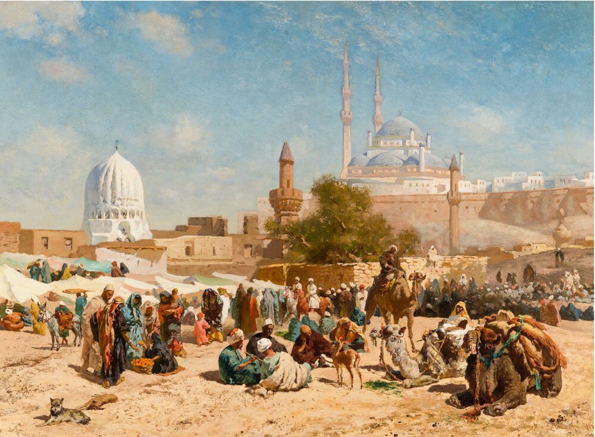
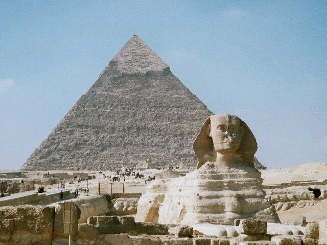
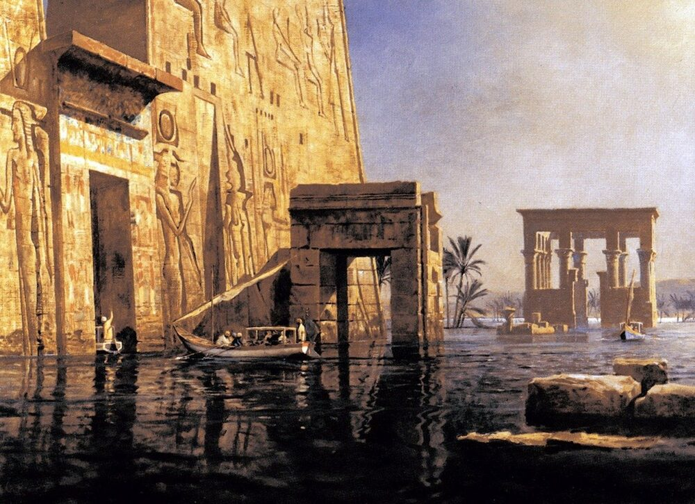

B2 · Travel & Places
A Journey Through Egypt
Cairo to Alexandria by way of the Nile, and what a country does with four thousand years of inheritance.
Play the audio and follow along, then read it again on your own. Tap or hover over a highlighted word to see what it means.
The journey began in Cairo, which is not a city that eases you in. Twenty-odd million people, traffic that treats lane markings as a suggestion, and, in the middle of it, the Egyptian Museum holding more of the ancient world than any building reasonably should. The collection runs to well over a hundred thousand objects and only a fraction is ever on display. The Tutankhamun rooms are the ones everyone comes for, and the gold funerary mask genuinely does stop people where they stand — though the more affecting things are often smaller: a child's sandals, a folding stool, a board game.

What the museum makes clear is how much of this is one continuous inheritance. The objects span thousands of years, and the country they came from is still there, still farming the same strip of river valley.
From Cairo it is a short drive to Giza, where the Great Pyramid stands on the edge of the suburbs — a detail that surprises most visitors, who expect open desert and find a road and a bus park. It was built about 4,500 years ago for the pharaoh Khufu, and it was the tallest structure made by human beings for something like 3,800 years afterwards. It was built without iron tools, without the wheel in any form useful for the task, and without machines: with copper implements, ramps, water, rope and an enormous quantity of organized labor. The workers were not slaves, as was assumed for a long time; the excavated settlement beside the site shows a paid workforce that was fed on bread, beer and meat, and buried with honor nearby.


The Sphinx sits below the pyramids, smaller than photographs suggest and missing its nose. A good deal of nonsense is written about it — hidden chambers, lost civilisations, a buried hall of records. None of that has ever been found, and the archaeologists who work the site spend a certain amount of their time saying so. What is actually remarkable requires no invention: it was carved from a single mass of limestone left in place when the surrounding rock was quarried for the pyramids.
Then the Nile. A boat from Luxor to Aswan is the classic route, and the appeal of it is not the boat but the geography, which becomes obvious from the water in a way it never does on a map. Egypt is a narrow green ribbon perhaps a few kilometers wide with desert on either side, and the line where the irrigation stops is as sharp as a drawn border. Ninety-five per cent of the population lives on about five per cent of the land, and you can see exactly why within the first hour.

Luxor is built over ancient Thebes and has more standing monuments than anywhere else on earth. Karnak is the one that defeats people: a temple complex enlarged by pharaoh after pharaoh across roughly two thousand years, so that walking through it is less like visiting a building than reading a very long argument between rulers about who mattered most. The hypostyle hall has 134 columns, and the tallest are about twenty-four meters. Across the river, the Valley of the Kings holds the rock-cut tombs, and the painted ceilings in them have kept their color for three millennia because they were sealed, dark and dry — which is also the reason visitor numbers in each tomb are now limited.
Aswan is quieter, and the Nile is at its most beautiful there. The temple of Philae, dedicated to Isis, was moved stone by stone to a neighboring island in the 1960s and 1970s, because the Aswan High Dam would otherwise have drowned it. The dam did what it was built for: it ended the annual flood, secured the water supply and generates a large share of the country's electricity. It also submerged Nubian towns and villages and displaced tens of thousands of people, many of whom were resettled far from the river their communities had lived on for centuries. Both halves of that are true, and the temple standing on its new island is a reasonable place to think about the trade.
The food along the way was better than its reputation abroad. Koshari — rice, lentils, macaroni, fried onions and a sharp tomato sauce — is the national dish and costs almost nothing. Ful medames, slow-cooked fava beans, is what much of the country eats for breakfast. A few words of Arabic go a long way: shukran, thank you, changes the temperature of a conversation immediately.
The journey ended in Alexandria, on the Mediterranean, which feels like a different country — sea air, Greek and Roman layers under the streets, a long curving corniche. The ancient Library is gone, and almost nothing of it survives to see. In its place stands the Bibliotheca Alexandrina, opened in 2002, which is a working library and a deliberate gesture rather than a reconstruction. Sitting on the seafront afterwards with fresh fish, the thing that stayed was not any single monument. It was the continuity — that people have been living along this river, arguing and building and burying their dead, for longer than most countries have existed at all.
Key Vocabulary
- to ease someone in to introduce someone to something gradually
- affecting producing a strong emotional response
- inheritance what is passed down from earlier generations
- implement a tool
- workforce all the people employed on a particular job
- to quarry to cut stone out of the ground for building
- limestone a soft sedimentary rock widely used for building
- ribbon a long narrow strip
- hypostyle having a roof supported by rows of columns
- millennium a period of a thousand years
- to submerge to cover completely with water
- to displace to force people to leave the place they live
- to resettle to move a population to a new place to live
- corniche a road running along a coast or cliff
A Journey Through Egypt — B2 · Travel & Places · Renan the Teacher, English Language Academy · https://renangrossi.github.io/englishclasses/reading/b2/egypt-a-journey-through-history-and-culture.html
Interactive Exercises
Practice
Complete each exercise, then click Submit to see your score and an explanation for every answer.
Speaking & Writing
Discussion
There are no right answers here — use these to practice speaking, or write a short answer to each.
- The text says archaeologists spend time denying stories about the Sphinx. Why are invented explanations often more popular than real ones?
- The dam secured water and power and displaced tens of thousands of people. How should a country weigh that kind of trade?
- The pyramid workers turn out to have been paid, not enslaved. Why do you think the older assumption lasted so long?
- A modern library was built where an ancient one stood, as “a gesture rather than a reconstruction”. Is that worth doing?
- Write about 200 words describing a journey you have made, using past simple for the events and present simple for what is permanently true of the place.